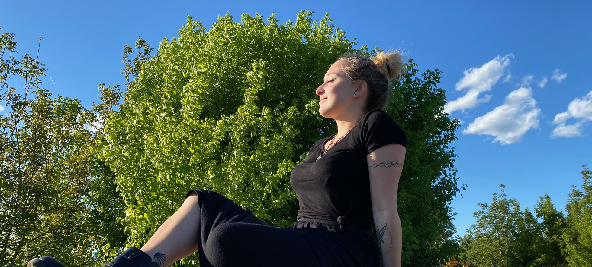

Ciao, mi chiamo Martina
Sono una graphic designer e mi occupo di comunicazione su diversi canali.
Spesso le idee si accendono l’una con l’altra, come scintille elettriche.
Friedrich Engels
Benvenuti!
Sono una studentessa di comunicazione e grafica presso ITS Rizzoli.
Mi considero un’ anima creativa e sono sempre alla ricerca di stimoli visivi, qualcosa che è fortemente guidato dal mio amore per i viaggi. Visitare, sperimentare e assorbire le meraviglie del mondo alimenta la mia creatività e accende il mio desiderio di creare design di grande impatto.
Aiuto i marchi a prendere vita creando storie visive e veicolando il loro messaggio; Dal design aziendale elegante e moderno alle opere creative piene di individualità e personalità.